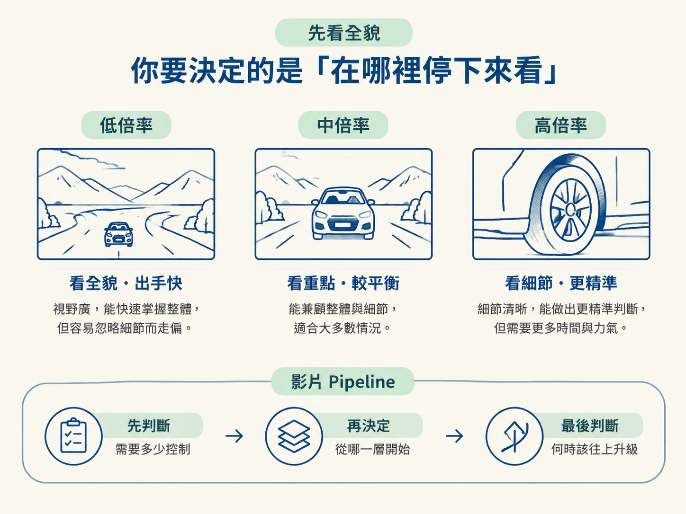
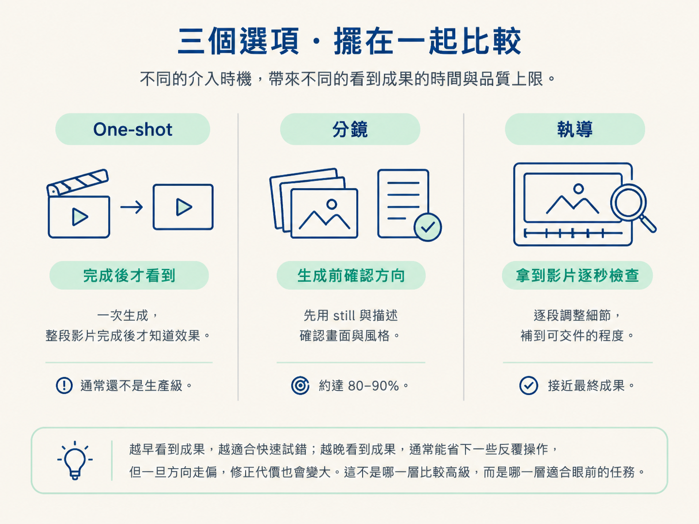
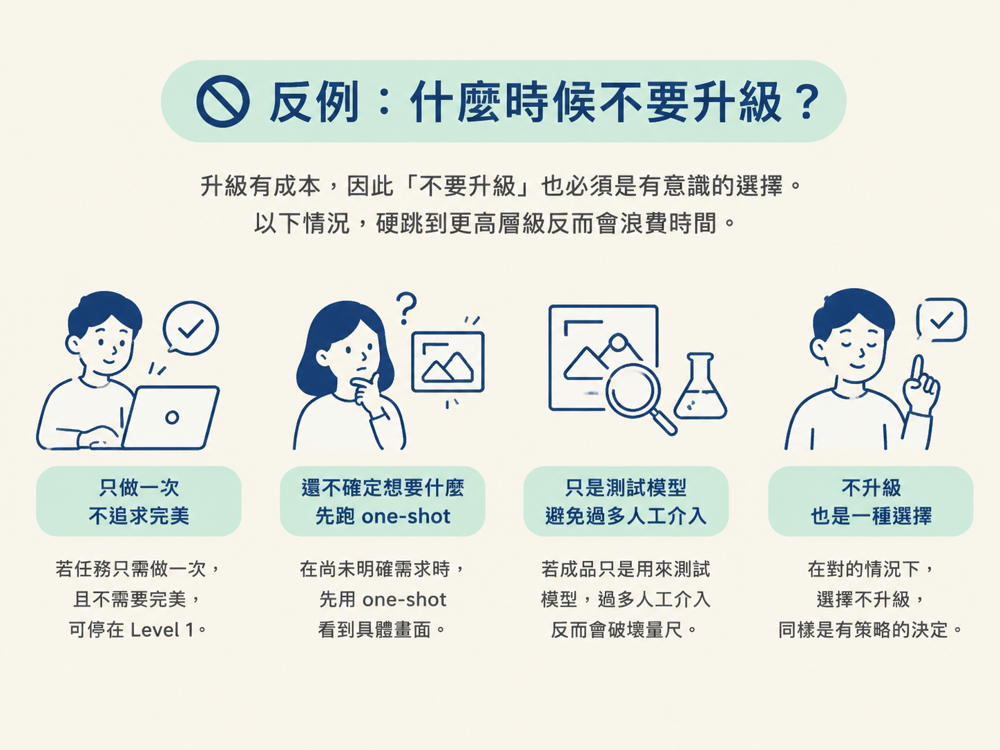

面對新的影片任務時，你能用幾個可測試的問句，選出適合的 one-shot、分鏡或執導層級，也知道什麼訊號出現時，該往上跳一級。
做影片時，工具通常不是最大的問題。真正讓人卡住的是：這個任務到底值得投入多少控制力？你可以用一句 prompt 快速試跑，也可以先規劃分鏡，甚至逐秒檢查成品、釘時間碼回饋。
這三種方式，就像三個不同倍率的鏡頭。倍率越高，看得越細，也越花力氣；倍率越低，出手越快，但走偏時，可能要重新來過。
同一個人，早上可能用 one-shot 測試新模型，下午卻為了客戶的正式影片走完整套分鏡與執導。選錯層級不一定會「做不出來」，但可能在不值得的地方花太多時間，或在真正需要講究的地方過早收工。
所以這一節不談新工具，重點是教你在整條影片 pipeline 裡定位自己：先判斷這支片需要多少控制，再決定從哪一層開始，以及什麼時候該往上升級。

先把三層放在同一張表裡看。最後一欄無關好壞，說的是每個層級通常能抵達的上限。
| 層級 | 最適合 | 你何時看到成果 | 通常到得了哪裡 |
|---|---|---|---|
| Level 1 one-shot |
測試新模型、製作作品集、建立可複用元素 | 完成時 | 效果不錯，但通常還不是生產級 |
| Level 2 分鏡 |
你已經知道想要什麼樣的影片 | 生成之前，先用 still 加上描述確認方向 | 通常能到目標的 80–90% |
| Level 3 執導 |
打磨最後 10–20% 的畫面、聲音與剪點 | 拿到真正的影片後，一秒一秒檢查 | 補到可以交件的程度 |
看表格時，先抓住兩個變數：你什麼時候第一次看到成果，以及你願意投入多少力氣。
越早看到成果，越適合快速試錯；越晚看到成果，通常能省下一些反覆操作，但一旦方向走偏，修正代價也會變大。這裡無關哪一層比較高級，只看眼前的任務適合哪一層。

不要只憑感覺選層級。動手前，先問自己下面幾題。
前三題決定的是「這一支影片」要用哪一層；第四題決定的是「這個能力」要不要留下來。兩者不衝突：你可以今天用 Level 3 完成一支影片，同時把做法整合成一個會持續成長的 skill。
層級不是一開始選定就不能改。製作過程中，你可以根據看到的結果重新判斷。
升級有成本，所以「不要升級」也得是一個想過的決定。以下情況，硬跳到更高層級反而會浪費時間。

先問：「我什麼時候需要第一次看到成果？」再問：「這件事之後會不會重複？」想最快看到結果，就從 one-shot 開始；已經知道目標、又想在生成前確認方向，就用分鏡；已有成品、需要修畫面聲音與剪點，就進入執導。若同一件事會反覆發生，再接上 BIT 迴圈。
記住，便宜的是那一行 one-shot prompt，真正值錢的是你的品味，以及你給 AI 回饋的那套作業系統。
把三層駕馭和 BIT 放在一起，你會看到「用 AI 做影片」的核心工作，關鍵是決定在哪裡停下來看、在哪裡出手，打字反而是其次。拿到任務時，先定位自己在哪一層，再決定要往前、往上，還是直接收工。